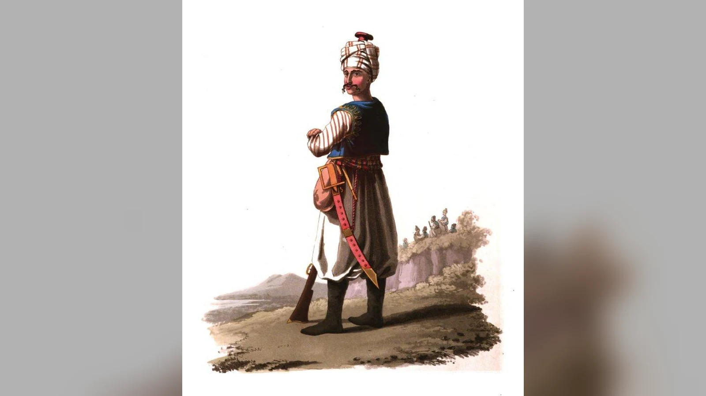
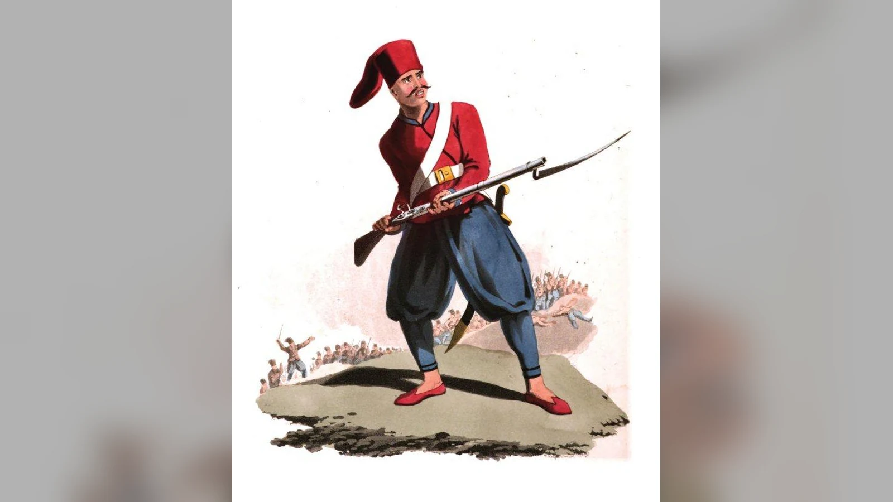
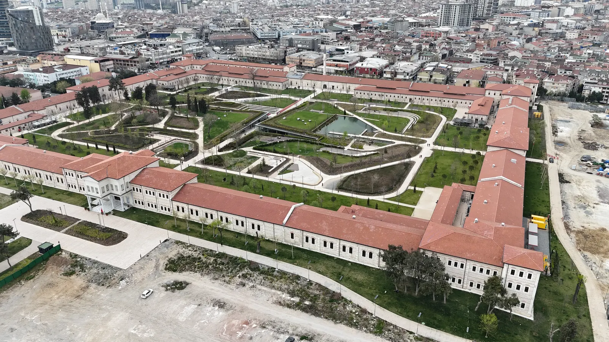

Yeniçeriler, 1826 yılında II. Mahmud tarafından kaldırıldı; çünkü Osmanlı yönetimi, değişen savaş şartlarına uygun ve merkezden denetlenebilen bir ordu kurmak isterken Yeniçeri Ocağı’nın kurumsal direnciyle karşılaşıyordu. Ocağın bir bölümünün askerî eğitim ve disiplin konusundaki sorunları, reform girişimlerine karşı çıkan güçlü grupların varlığı ve yeniçerilerin İstanbul siyasetinde padişahları dahi tehdit edebilen bir güç oluşturması, bu kararda birleşti. Haziran 1826’da yeni talim düzenine karşı çıkan yeniçeri gruplarının ayaklanması topçu birlikleriyle bastırıldı; ardından ocak resmen lağvedildi.
Ancak “yeniçeriler bozulmuştu, bu yüzden kapatıldı” açıklaması olayın yalnız bir kısmını anlatır. 1826’da ortadan kaldırılan yapı, sadece savaş meydanında görev yapan askerlerden oluşmuyordu. Yeniçerilik, İstanbul esnafından hamallara, maaş belgelerini elinde tutan kişilerden mahalle ilişkilerine kadar uzanan bir ekonomik ve toplumsal ağdı. II. Mahmud’un yaptığı şey bir askerî birliği değiştirmekten daha kapsamlıydı: Devletin silahlı gücünü kimin yöneteceği, şehirde kimlerin söz sahibi olacağı ve reform kararlarına kimin karşı koyabileceği yeniden belirlendi. Resmî kaynakların “Vak‘a-i Hayriyye”, yani “Hayırlı Olay” adını verdiği gelişme, bu nedenle aynı anda askerî reform, siyasi tasfiye ve kanlı bir şehir çatışmasıydı.
Yeniçeri Ocağı’nın kaldırılması Osmanlı tarihinin en keskin kurumsal kopuşlarından biri sayılır. Fakat bu kopuşu anlamak için iki kolay açıklamadan uzak durmak gerekir. Yeniçeriler kuruluşlarından itibaren kusursuz askerler olup bir gün ansızın yozlaşmadılar; yüzyıllar boyunca görevleri ve toplumla ilişkileri değişti. II. Mahmud da tek başına çağdaş savaş tekniklerini keşfeden hükümdar değildi; kendisinden önceki reform denemelerinin başarısızlığını ve bunların yarattığı siyasi tehlikeleri devraldı. 1826’nın neden farklı sonuçlandığı, ocağın geçmişinden çok bu iki uzun sürecin karşılaşmasında aranmalıdır.
Yeniçeri Ocağı Nasıl Bir Kurumdu?

Yeniçeri Ocağı, Osmanlı hükümdarının merkezî askerî gücünün önemli parçalarından biriydi. İlk teşkilatlanmasının tarihi ve hangi hükümdar döneminde kesin biçimini aldığı konusunda kaynaklar arasında farklılıklar bulunur. Genellikle on dördüncü yüzyılın ikinci yarısındaki askerî yapılanmayla ilişkilendirilir. Kuruluş anlatılarında I. Murad dönemi öne çıksa da ocağın sonraki yüzyıllarda kazandığı bütün özellikleri ilk günden mevcut saymak doğru değildir. Kurum gelişerek büyüdü, farklı dönemlerde yeni düzenlemelerle biçimlendi.
Kapıkulu sisteminde yeniçeriler doğrudan hükümdarın hizmetindeki ücretli piyade kuvveti olarak öne çıktı. Erken dönemlerde savaş esirlerinden ve daha sonra devşirme yoluyla toplanan çocukların eğitiminden beslenen insan kaynağı, askerlerin hanedanla kurduğu bağı güçlendirmeyi amaçlıyordu. Devşirme, Hristiyan tebaadan belirli usullerle çocuk alınması ve bunların Osmanlı hizmetine hazırlanmasıydı. Bu uygulama kendi çağının iktidar ve zor ilişkileri içinde değerlendirilmelidir; çocukların ailelerinden alınmasını romantik bir “fırsat sistemi” olarak anlatmak da sistemin eğitim ve yükselme imkânlarını bütünüyle yok saymak da tarihsel tabloyu eksiltir.
Yeniçeriler, ocak içinde “orta” ve “bölük” gibi örgütlenmelere bağlıydı. Kışla hayatı, maaş, ortak simgeler, komuta zinciri ve kendine özgü gelenekler güçlü kurumsal aidiyet oluşturuyordu. Savaşta hükümdarın merkez ordusunda bulunmaları ve ateşli silahları kullanmadaki rolleri, özellikle klasik dönemde önemli avantaj sağladı. Osmanlıların büyük seferleri yalnız yeniçerilerle kazanılmadı; tımarlı sipahiler, topçular, yardımcı kuvvetler ve lojistik teşkilat da belirleyiciydi. Yine de yeniçerilerin merkezî piyade gücü olarak taşıdığı ağırlık tartışmasızdı.
Kurumun ilerleyen yüzyıllarda değişmesi yalnız disiplinsizlikle açıklanamaz. İmparatorluk büyüdükçe savaşların niteliği, sefer süreleri, şehir ekonomisi ve devletin gelir düzeni de değişti. Askerlerin aile kurması, ticaretle uğraşması, ocakla bağlantılı farklı gelir biçimlerinin gelişmesi ve devşirme dışındaki katılım yollarının yaygınlaşması uzun zamana yayılan süreçlerdi. Bunları tek bir padişahın “yasakları kaldırması” sonucunda bir gecede gerçekleşmiş dönüşümler gibi göstermek yanıltıcıdır.
Yeniçerilerin değişimini anlamak için önce kurumun ne kadar kalıcı olduğunu görmek gerekir. Yüzyıllarca yaşayan askerî bir örgüt yalnız savaş düzeni değildir; kendi çıkarlarını, hafızasını, hukukî ayrıcalıklarını ve toplumsal ilişkilerini de üretir. Bu ağlar devletin ihtiyaçlarıyla uyumlu olduğunda kuruma dayanıklılık kazandırır. Fakat devlet farklı türde askerî güç istediğinde aynı ağlar değişime direnç gösterebilir. 1826’ya uzanan gerilim, uzun ömürlü kurumların bu ikili özelliği içinde şekillendi.
Yeniçeriler Neden İstanbul’un Siyasi Gücüne Dönüştü?
Yeniçerilerin İstanbul’daki varlığı, başkentin askerî güvenliğini sağlamanın ötesinde sonuçlar doğurdu. Kışlalar şehir merkezine yakındı; askerler çarşıyla, mahallelerle, nakliyecilerle ve esnaf örgütleriyle gündelik ilişki içindeydi. Zamanla bazı yeniçeriler dükkân işletti, zanaat yaptı veya ticaretle uğraştı. Bazı esnaf ve şehir sakinleri de ocakla bağlantı kurarak koruma, gelir ve statü elde etmeye çalıştı. Böylece “yeniçeri” adı her zaman yalnız fiilen talime çıkan savaşçıyı ifade etmemeye başladı.
Bu dönüşümün önemli araçlarından biri esâme idi. Esâme, yeniçeri maaşıyla bağlantılı kayıt ve ödeme hakkını gösteren belge olarak ekonomik değer taşıyabiliyordu. Uygulamanın genişlemesiyle bazı esâmeler fiilen askerlik yapmayan kişilerin eline geçti. Maaş hakkının el değiştirmesi, bir askerî kayıt sisteminin şehir ekonomisinde gelir aracına dönüşmesi demekti. Dolayısıyla ocakta reform yapılacağı söylentisi yalnız kışladaki askeri değil, esâme gelirine güvenen farklı toplumsal kesimleri de etkileyebiliyordu.
Esâme sahibi olmak ile cephede hizmet etmek arasındaki bağın zayıflaması devlet açısından mali ve idari sorun yarattı. Hazine maaş ödüyor, fakat bu ödeme her zaman eğitilmiş ve seferde kullanılabilir asker karşılığına denk düşmüyordu. Yine de bütün kayıtlı yeniçerilerin sahte asker olduğu sonucuna varılamaz. Gerçek hizmet görenlerle ocak üzerinden gelir elde edenler aynı geniş sistem içinde bulunuyordu. Sorun, bu ayrımın devletin askerî planlama yapmasını güçleştirmesiydi.
İstanbul’un hamalları, kayıkçıları ve çeşitli iş kollarında çalışanlar arasında ocak bağlantılarının yaygınlaşması, yeniçeri ağlarına toplumsal seferberlik gücü de kazandırdı. Ocağın ileri gelenleri, devletle çatışmaya girdiklerinde yalnız silahlı askerleri değil, onlarla çıkar ilişkisi kurmuş kişileri de harekete geçirebiliyordu. Bu, yeniçerilerin şehirdeki bütün esnafı temsil ettiği anlamına gelmez. Bazı esnaf yeniçerilerle dayanışırken bazıları onların baskısından şikâyet ediyordu. Kent toplumunu tek bir siyasi cephe gibi düşünmek, 1826’da padişahın neden belirli kesimlerden destek bulabildiğini açıklamayı zorlaştırır.
Yeniçeri Ocağı’nın siyasi gücü padişahların tahta çıkışı ve görevden alınması süreçlerinde de görüldü. Ocak mensupları veya onların adına hareket eden gruplar farklı dönemlerde ayaklanmalara katıldı, devlet adamlarının görevden alınmasını istedi ve hükümdarlık kararlarını etkiledi. Ancak her isyanın bütün yeniçerilerin ortak iradesini yansıttığı söylenemez. Alt rütbeli görevliler, ocak ileri gelenleri, esnaf bağlantıları ve siyasi hizipler farklı çıkarlarla hareket edebiliyordu. “Yeniçeriler isyan etti” ifadesinin arkasında çoğu zaman bu karmaşık bileşim bulunuyordu.
II. Mahmud açısından tehlike yalnız kötü savaşan askerlerin maaş alması değildi. Başkentte padişahın emirlerini uygulamakla görevli bir kuvvet, gerektiğinde emirleri reddedip hükümdarın siyasi varlığını tehdit edebiliyordu. Yeni bir eğitim düzeni getirmek, maaş kayıtlarını denetlemek veya subayları değiştirmek bu nedenle teknik düzenleme olmaktan çıkıyordu. Reformun uygulanabilmesi için önce reformu engelleyebilecek siyasi güç dengesiyle yüzleşmek gerekiyordu.
Osmanlı Ordusu Neden Yeni Bir Askerî Düzene İhtiyaç Duyuyordu?
On sekizinci yüzyılın sonlarına doğru Osmanlı Devleti, özellikle Rusya ve Avusturya karşısındaki savaşlarda ağır sorunlarla karşılaştı. Bu sorunların bir bölümü askerî eğitim ve disiplinle ilgiliydi; fakat yalnız yeniçerilerin davranışlarına bağlanamazdı. Mali kaynakların yetersizliği, sefer lojistiği, subay yetiştirme, silah ve mühimmat tedariki, taşradaki güç ilişkileri ve devletin geniş coğrafyasını yönetme zorluğu birbirine bağlıydı. Modern orduların gerektirdiği düzenli eğitim, standart komuta ve sürekli finansman mevcut yapıyla kolayca sağlanamıyordu.
Avrupa ordularındaki dönüşüm de tek çizgili değildi. Ateşli silahlar yeniçeriler için yabancı teknoloji değildi; Osmanlı piyadesi yüzyıllardır tüfek kullanıyordu. Değişen şey, silahın tek başına varlığından çok birliklerin düzenli talimi, hareket kabiliyeti, ateş disiplininin sürekliliği ve farklı askerî sınıfların eşgüdümüydü. Avrupa ordularındaki her uygulamanın Osmanlılar için doğrudan uygun olduğunu varsaymak gerekmez. Ancak devlet adamları savaşlarda karşılaştıkları zorluklardan mevcut askerî örgütlenmenin kapsamlı düzenleme istediği sonucuna varıyordu.
1792’de Rusya ile yapılan Yaş Antlaşması sonrasındaki değerlendirmeler, askerî reform ihtiyacının ne kadar ciddi görüldüğünü ortaya koydu. Savaş sırasında birliklerin durumuna ilişkin olumsuz raporlar yalnız bir ocağın ahlakına dair yakınma değildi; devletin büyük savaşları sürdürebilme kapasitesi sorgulanıyordu. Eğitimli piyade oluşturmak, topçuyu güçlendirmek, yeni kışlalar kurmak ve gelir kaynaklarını daha düzenli toplamak aynı programın parçaları hâline geldi.
Buradaki temel güçlük, yeni ordu için gereken paranın da eski ordunun ve diğer devlet yükümlülüklerinin yanında bulunmak zorunda olmasıydı. Yeni birlikleri kurmak yalnız emir yayımlamakla gerçekleşmez. Asker maaşı, üniforma, silah, kışla, eğitimci, iaşe ve sürekli denetim gerekir. Mevcut askerî sınıflar gelir ve ayrıcalık kaybından korkarken hazine yeni düzenin masraflarını üstlenmek zorundaydı. Reformun siyaseten dirençle karşılaşması kadar mali açıdan zorlanması da mümkündü.
Yeniçerilerin askerî performansı hakkında da toptancı hükümden kaçınmak gerekir. Bazı birlikler savaşmaya devam ediyor, belirli cephelerde deneyim gösteriyordu. Sorun, ocağın bütününün merkezî hükümetin istediği sürekli ve standart eğitimli kuvvet hâline getirilmesindeki güçlüklerdi. Devlet için birkaç başarılı birlik yeterli değildi; savaş zamanında güvenilir sayıda askerin belirli emirler altında birlikte hareket edebilmesi gerekiyordu. Bu kapasiteyi sağlama meselesi 1826’ya kadar çözülemedi.
III. Selim’in Nizam-ı Cedid Girişimi Neden Başarısız Oldu?

III. Selim döneminde başlatılan Nizam-ı Cedid, yani “yeni düzen”, askerî yenilenme ihtiyacına verilen en kapsamlı cevaplardan biriydi. Yeni eğitimli birlikler oluşturuldu, bunların giderleri için ayrı mali kaynaklar geliştirilmeye çalışıldı ve Avrupa usulü talim yöntemlerinden yararlanıldı. Ancak bu programı yalnız yeniçerilerin yerine başka asker koyma girişimi saymak eksiktir. Mali, idari ve askerî alanları birlikte etkileyen daha geniş reform düşüncesi vardı.
Nizam-ı Cedid birliklerinin varlığı, mevcut ocak mensupları için gelecekteki konumları hakkında soru işaretleri doğurdu. Yeni askerî düzen büyürse eski kurumun maaş, nüfuz ve siyasi ayrıcalıkları ne olacaktı? Reform taraftarlarının yeni orduyu daha güvenilir görmesi, ocak içinde reformun kendilerini gereksiz kılacağı endişesini besleyebilirdi. Fakat 1807’deki karşı hareket yalnız yeniçerilerin dar çıkarlarına indirgenemez. Reformların finansmanı, yönetimdeki hizipler, başkentteki memnuniyetsizlikler ve Boğaz yamaklarının tepkisi de sürece katıldı.
1807’de Kabakçı Mustafa isyanı sırasında III. Selim’in reform düzeni çöktü ve padişah tahttan indirildi. Bu olay, askerî yeniliğin teknik doğruluğunun onu siyasi bakımdan güvenceye almadığını gösterdi. Eğitimli birlik kurmak mümkün olabilir; fakat hükümdar reformun karşıtlarını kontrol edemiyorsa yeni düzenin geleceği güvencede değildir. Reformcuların karşılaştığı temel mesele tam olarak buydu.
III. Selim’in başarısızlığını “iyi padişahın kötü askerlerce engellenmesi” biçiminde anlatmak da yeterli değildir. Nizam-ı Cedid'in yeni mali yükler getirmesi, taşradaki çıkar dengeleri ve uygulamadaki güçlükler gerçek sorunlardı. Reformun uzun ömürlü olması için yalnız sarayda değil, toplumun ve devlet aygıtının çeşitli katmanlarında destek üretilmesi gerekiyordu. 1807’de bu destek yeterli düzeye ulaşmadı.
II. Mahmud’un sonraki siyasetinde 1807 deneyiminin ağırlığı hissedilir. Yeni bir askerî düzen ilan etmek tek başına çözüm değildi; bu düzeni koruyacak silahlı kuvvetlerin, ulemanın ve bürokrasinin tutumunu önceden belirlemek gerekiyordu. 1826’daki başarının bir yönü, hükümdarın reform karşıtlarının hangi toplumsal ve askerî bağlantılardan güç aldığını daha dikkatli değerlendirmesiydi.
Alemdar Mustafa Paşa ve Sekban-ı Cedid Deneyimi
1808’de Alemdar Mustafa Paşa’nın İstanbul’a gelişiyle siyasi dengeler yeniden değişti. III. Selim’i yeniden tahta çıkarma girişimi başarısız oldu; Selim öldürüldü ve II. Mahmud 28 Temmuz 1808’de padişah oldu. Alemdar, merkezî otoriteyi yeniden kurma çabasının önemli ismi hâline geldi. Ancak onun iktidarı da kısa sürdü ve yeni askerî düzen tartışmaları yeniden çatışmaya dönüştü.
Alemdar’ın desteklediği Sekban-ı Cedid, III. Selim’in Nizam-ı Cedid teşkilatıyla aynı kurum değildi. Eski reform tecrübesinden yararlanan yeni bir askerî denemeydi. İsim değişikliği ve örgütlenme tercihleri, geçmişteki reformlara karşı gelişen tepkiyi azaltma çabası olarak da görülebilir. Fakat yalnız adı değiştirmek, reformun yarattığı siyasi korkuları ortadan kaldırmadı.
Kasım 1808’de çıkan ayaklanma sırasında Alemdar Mustafa Paşa öldü ve Sekban-ı Cedid de ortadan kaldırıldı. II. Mahmud, saltanatının daha ilk aylarında reform girişiminin padişahı da ciddi tehlikeye sokabildiğini gördü. 1807 ve 1808 olaylarının birbirinden farklı koşulları vardı; yine de ortak sonuç, yeni ordu kurmanın başkentteki güç dengeleri değişmeden güvenli olmadığıydı.
Bu iki deneyim 1826’ya giden yolun temelini oluşturdu. Devletin askerî yeniliğe ihtiyacı ortadan kalkmadı; fakat yeniliği gerçekleştirecek siyasi ortamın hazırlanması gerekiyordu. II. Mahmud’un uzun süre açık ve kapsamlı askerî değişiklikten kaçınması yalnız kararsızlıkla açıklanamaz. Önceki iki girişim çok kısa sürede hükümdarlık krizine dönüşmüştü. Bu nedenle yeni bir adım atılmadan önce hangi birliklerin kimin yanında duracağının belirlenmesi hayatiydi.
Öte yandan II. Mahmud’un sonraki başarısını tamamen önceden yazılmış kusursuz plan gibi anlatmak da doğru olmaz. Siyasi şartlar zaman içinde değişti; 1821’de başlayan Rum isyanı, Mısır kuvvetlerinin askerî performansı, ocak içindeki görev değişiklikleri ve başkentteki kamuoyu yeni imkânlar yarattı. Mahmud bu gelişmeleri değerlendirdi. Tarihsel açıklama, uzun vadeli hazırlık ile ortaya çıkan fırsatların birleşimini birlikte ele almalıdır.
II. Mahmud 1826’ya Kadar Nasıl Güç Topladı?
II. Mahmud 1808’de tahta çıktığında yeniçerilere karşı doğrudan büyük bir askerî harekâta girişebilecek durumda değildi. Önce merkezî yönetimdeki dengeleri değiştirmesi, kendisine bağlı askerî sınıfları güçlendirmesi ve ayaklanma ihtimalinde yalnız kalmayacağı ortamı oluşturması gerekiyordu. Bu hazırlıkların tamamı gizli bir planın ayrıntıları olarak belgelenmiş değildir; fakat görev değişiklikleri, ocak içindeki tasfiyeler ve askerî güçlerin konumlandırılması 1826’dan önce önemli hazırlık yapıldığını gösterir.
Özellikle Ağa Hüseyin Paşa gibi isimlerin rolü dikkat çekicidir. Yeniçeri ağalığı sırasında ocak içindeki muhalif görevlilerin etkisinin azaltılması ve bazı birliklerin İstanbul dışına sevk edilmesi, sonraki çatışmada direnişin beklenenden daha sınırlı kalmasını açıklayan unsurlar arasındadır. Mehmed Reşid Paşa gibi hükümdara bağlı komutanların kuvvetleri de kritik günlerde kullanılabilecek durumdaydı. Burada hükümdarın başarısı yalnız karşı tarafın asker sayısını azaltmak değil, emir verebileceği güçlerin sadakatini güvenceye almaktı.
Topçu, humbaracı, lağımcı ve donanmayla ilişkili askerî sınıfların yeniçeri isyanına katılmaması belirleyici oldu. 1807 ve 1808’de başkentteki askerî muhalefet reform girişimlerini yıkabilmişti; 1826’da ise padişahın yanında etkili ateş gücüne sahip birlikler vardı. Bu farklılık, son çatışmanın sonucunu yalnız yeniçerilerin “cesaretini kaybetmesi” gibi kişisel özelliklerle açıklamaktan daha sağlamdır. Silahlı kuvvetler arasındaki güç dengesi değişmişti.
Mahmud’un hazırlığının diğer ayağı ulema ve devlet adamlarıydı. 1825 sonunda şeyhülislamlığa Kadızâde Mehmed Tâhir Efendi’nin getirilmesi, askerî reformun dinî meşruiyetinin oluşturulması bakımından önemlidir. Osmanlı siyasi düzeninde padişahın iradesi güçlüydü, fakat özellikle büyük bir askerî sınıfa karşı harekete geçilirken ulemanın desteği kamuoyu açısından kritik rol oynayabiliyordu. Geçmiş isyanlarda askerî muhalefetle birleşebilen dinî ve şehirli grupların bu kez aynı safta bulunmaması gerekiyordu.
Yeniçeri bağlantılı esâme sahiplerine ilişkin yaklaşım da bu çerçevede anlaşılır. Maaş hakkını elinde bulunduran herkesin doğrudan düşman sayılması, reform karşıtlarının toplumsal tabanını genişletebilirdi. Esâme ödemelerinin devam edeceğine ilişkin güvenceler, ocakla ekonomik ilişki kurmuş kişileri silahlı direnişten uzaklaştırmaya yaradı. Böylece devlet, fiilen ayaklanacak askerî gruplarla ekonomik çıkarları bulunan daha geniş toplulukları birbirinden ayırmaya çalıştı.
Bu siyaset, 1826’yı yalnız askerî zafer olmaktan çıkarır. Mahmud’un kuvvetleri kışlaları topa tutabilecek güçteydi; fakat o güçlerin kullanılabilmesi için şehirde yaygın karşı ittifak oluşmaması da gerekiyordu. Siyasi hazırlık olmadan topçunun varlığı yeterli olmayabilirdi. II. Mahmud’un merkezî otoriteyi güçlendirme hedefi ile askerî reform ihtiyacı bu noktada birbirini tamamladı.
Rum İsyanı Reform Tartışmasını Nasıl Değiştirdi?
1821’de başlayan Rum isyanı, Osmanlı yönetiminin askerî sorunlarını daha görünür hâle getirdi. Mora ve çevresindeki gelişmeler uzun süre bastırılamadı. İsyanın çok farklı yerel ve uluslararası boyutları vardı; bütün sorumluluğu yeniçerilere yüklemek doğru değildir. Bununla birlikte hükümet çevrelerinde mevcut askerî düzenin yetersizliği daha yüksek sesle tartışılmaya başlandı.
Mısır Valisi Kavalalı Mehmed Ali Paşa’nın geliştirdiği eğitimli kuvvetlerin isyanın bastırılmasında gösterdiği etkinlik, Osmanlı merkezinde dikkat çekti. 1826 baharında Misolongi’nin ele geçirilmesi, düzenli talim görmüş askerlerin başarı sağlayabileceği yönündeki değerlendirmeleri güçlendirdi. Bu gelişme, Avrupa tarzı askerî eğitim tartışmasını soyut bir taklit meselesi olmaktan çıkarıp Osmanlı dünyası içinde gözlenebilen somut örneğe dönüştürdü.
Fakat Mısır kuvvetlerinin başarısını “yeni asker her durumda üstün gelir” biçiminde okumak yanlış olur. Savaşın koşulları, komutanlar, lojistik ve dış destek gibi değişkenler sonuçları etkiliyordu. Reform yanlıları açısından önemli olan, sürekli eğitim ve düzenli komutanın savaş kapasitesini artırabileceğine dair yeni kanıt bulunmasıydı. Bu kanıt, siyasi karar için uygun ortamın oluşmasına yardım etti.
Rum isyanının bir başka etkisi kamuoyundaydı. Başkentte savaşın uzaması ve askerî yetersizlik algısı, daha önce tehlikeli bulunan yeniliklerin savunulmasını kolaylaştırdı. Ulemanın ve devlet ileri gelenlerinin toplantılarında askerî talimin dinî ve siyasi gereklilik olarak gerekçelendirilmesi bu ortamla ilişkiliydi. Böylece reform, “yabancı usulleri benimsemek” suçlamasına karşı devletin ve toplumun savunulması için gerekli tedbir olarak sunulabildi.
Bu söylem hem gerçek askerî kaygıya hem de siyasi meşruiyet üretme ihtiyacına cevap veriyordu. Bir reformun gerekli olması, onu desteklemek için kullanılan bütün ifadelerin tarafsız olduğu anlamına gelmez. 1826’da yeniçerilere yöneltilen suçlamalar değerlendirilirken, devletin kendi kararını haklı göstermek için oluşturduğu dil ile askerî kurumun belgelenebilen sorunlarını ayrı tutmak gerekir.
Eşkinci Teşkilatı Neden Kuruldu?
1826 baharında hükümet, Eşkinci adı verilen yeni bir talimli askerî düzen oluşturma kararı aldı. Eşkinci kelimesi Osmanlı askerî dilinde daha önce de kullanılmıştı; burada amaç, yeniçeri sistemiyle bağlantılı askerlerden düzenli eğitim görecek kuvvet meydana getirmekti. Bu girişim III. Selim’in Nizam-ı Cedid’i veya Alemdar’ın Sekban-ı Cedid’iyle aynı kurum değildi. Eski girişimlerin yarattığı siyasi hafıza düşünüldüğünde isim ve örgütlenme tercihi başlı başına önem taşıyordu.
26 ve 29 Mayıs 1826’daki görüşmelerde üst düzey devlet adamları, ulema ve ocak temsilcileri yeni talim düzenini ele aldı. Hazırlanan metinler ve dinî gerekçelerle eğitimin zorunluluğu savunuldu. Ocak ileri gelenlerinin resmî kabulü sağlandı. Böylece hükümet, reformu dışarıdan dayatılan düşman bir ordu olarak değil, mevcut askerî sistem içinde kabul edilmiş düzenleme biçiminde sunma imkânı buldu.
Ne var ki resmî kabul ile tabandaki rıza aynı şey değildi. Talim başladığında bazı yeniçeriler bunun eski düzeni ortadan kaldıracak ilk adım olduğundan şüphelendi. Düzenli eğitim, belirli komuta ve yeni kayıt usulleri ocağın geleneksel özerkliğini azaltabilirdi. Üstelik reformun arkasında II. Mahmud’un uzun süredir güçlendirdiği askerî ve siyasi kadro bulunuyordu. Dolayısıyla anlaşmazlık yalnız “hangi hareketle tüfek tutulacağı” tartışması değildi; gelecekte ocağın kimin denetiminde bulunacağı meselesiydi.
12 Haziran’da Etmeydanı’nda başlayan talimler, hoşnutsuzluğun açık biçimde ortaya çıkmasına yol açtı. Bazı itirazlarda “gâvur talimi” gibi ifadeler kullanıldı. Bu tür söylemleri yalnız dinî inançla açıklamak yeterli değildir. Talimin yabancı usul diye nitelenmesi, kurumsal çıkar kaybı ve siyasi güvensizlikle birleşebilen etkili bir itiraz diliydi. Yeniçerilerin hepsinin aynı nedenle karşı çıktığı ise söylenemez.
Eşkinci girişiminin II. Mahmud tarafından bilerek isyan çıkarmak için tasarlandığı görüşü tarih yazımında güçlü biçimde savunulmuştur. Uzun hazırlıklar ve çatışmaya hazır tutulan kuvvetler bu yorumu destekleyen unsurlardır. Yine de hükümdarın bütün düşüncelerini doğrudan gösteren tartışmasız bir belge varmış gibi davranmamak gerekir. Daha güvenli ifade, Mahmud’un ayaklanma ihtimalini öngördüğü, buna karşı ciddi hazırlık yaptığı ve ayaklanma gerçekleştiğinde bunu ocağın kaldırılması için kullandığıdır.
1826’da Yeniçeri İsyanı Nasıl Başladı?
Haziran ortasında hoşnutsuz yeniçeri grupları Etmeydanı’nda toplandı ve geleneksel isyan işareti olarak kazanlarını ortaya çıkardı. Kaynaklar ilk toplanma ve şiddet olaylarının günlerini farklı biçimde aktarır. Haziran ortasındaki gerilim, 15 Haziran’da açık çatışmaya dönüştü. Yeniçeri ağası ve bazı devlet ileri gelenlerinin konutlarına yönelen saldırılar, hareketin yalnız talimi boykot etmekten daha ileri gittiğini gösteriyordu.
Kazan kaldırmak, ocağın ortak yemek ve birlik geleneği üzerinden siyasi başkaldırıyı ilan eden sembolik eylemdi. Kazan yeniçeriler için yalnız mutfak aracı değildi; birlik kimliğini ve ortak hareketi temsil ediyordu. Bu nedenle kazanların ortaya çıkarılması hükümete meydan okuma olarak anlaşılıyordu. Ancak sembolün güçlü olması, isyana katılanların sayısının ve hedeflerinin tek biçimli olduğu anlamına gelmez.
II. Mahmud bu kez önceki hükümdarlardan farklı bir konumdaydı. Sadrazam, şeyhülislam, topçu ve diğer teknik birliklerin önemli kısmı padişahın yanında yer aldı. İstanbul’da yeniçerilerle gerilim yaşayan bazı şehirli gruplar da hükümet safına geçti. Bu tablo, 1807’deki gibi askerî muhalefetin geniş ittifak kurmasını zorlaştırdı. Yeniçerilerin uzun yıllarda geliştirdiği toplumsal ağ güçlüydü; fakat 1826’da bütün şehir aynı safta birleşmedi.
Sancak-ı Şerif’in çıkarılması, yani Hz. Peygamber’e nispet edilen kutsal sancağın hükümdar yanlılarını toplamak üzere kullanılması, çatışmanın meşruiyet boyutunu gösterir. Ulemanın fetvası ve dinî semboller, yeniçeri isyanına karşı harekete geçenleri hükümdarın meşru otoritesi etrafında birleştirdi. Bu uygulamayı yalnız törensel ayrıntı olarak görmek doğru olmaz; halkın ve askerlerin hangi tarafı destekleyeceğini etkileyen siyasi işlev taşıyordu.
Hükümet, ayaklananlara teslim olma çağrısında bulundu. Ardından sadık birlikler Etmeydanı çevresine ilerledi. Topçuların ve başka askerî sınıfların desteği, çatışmanın gidişini belirledi. Kışlalar top ateşiyle vuruldu ve yangın çıktı. Direnişin ana merkezi kısa sürede çöktü. Ancak çatışmanın birkaç saat içinde sonuçlanması, olayın hafif geçtiği anlamına gelmez; kışlalarda ve sonraki cezalandırmalarda ciddi can kaybı yaşandı.
Vak‘a-i Hayriye’de Gerçekte Ne Yaşandı?
15 Haziran 1826, isyanın askerî olarak bastırıldığı temel tarih olarak öne çıkar. Topçu ateşiyle yeniçeri kışlalarının hedef alınması, İstanbul’un merkezinde devlet kuvvetleriyle ayaklanan askerler arasında açık savaş yaşandığı anlamına geliyordu. Osmanlı hükümdarı kendi başkentindeki köklü askerî kurumun direnişini ağır silah kullanarak kırdı. Bu sahneyi yalnız “yeni düzenin ilanı” olarak anlatmak şiddetin ölçeğini görünmez kılar.
Çatışmanın ardından aramalar, yakalamalar, yargılamalar ve idamlar devam etti. Yeniçeri kimliği taşıyan veya isyanla ilişkili görülen kişiler farklı muamelelere uğradı; bazıları kaçtı, bazıları saklandı, bazıları sürgüne gönderildi. Bütün yeniçerilerin aynı anda öldürüldüğü yönündeki anlatılar doğru değildir. Öte yandan olay yalnız birkaç isyancının cezalandırılmasıyla sınırlı kalmadı. Tasfiye, ocağın komuta ve mensubiyet ağlarına yöneldi.
Ölü sayıları konusunda kaynaklar büyük ölçüde ayrılır. Resmî anlatılarda, yabancı diplomatik raporlarda ve daha sonraki rivayetlerde farklı toplamlar görülür. Bu sayılara çatışmada ölenler, sonradan idam edilenler, İstanbul dışındaki cezalandırmalar ve söylentiyle büyütülmüş rakamlar farklı biçimlerde dahil edilmiş olabilir. Kemal Beydilli’nin değerlendirmesi, bazı çok yüksek rakamların korku yaratmaya yönelik dolaşıma girmiş olabileceğine dikkat çeker. Bu nedenle tek bir sayıyı kesin can kaybı olarak vermek tarihsel açıdan güvenilir değildir.
Sayı belirsizliği yaşanan şiddetin gerçekliğini azaltmaz. Kışlaların topa tutulması, toplu yakalamalar ve idamlar, merkezî otoritenin askerî kurumu ortadan kaldırmak için zor kullandığını gösterir. II. Mahmud’un bu kararı askerî yenilenme ihtiyacına dayanıyordu; fakat kullanılan yöntemlerin ayrıca değerlendirilmesi gerekir. Bir kararın siyasi gerekçesini açıklamak, o kararın bütün sonuçlarını ahlaken onaylamak değildir.
İstanbul dışındaki yeniçeri teşkilatları için süreç aynı biçimde yaşanmadı. Başkentteki kışla çatışması kısa ve yoğun bir askerî operasyondu; taşrada ise emirlerin uygulanması, kayıtların değiştirilmesi, yerel görevlilerin tasfiyesi ve olası direnişlerin bastırılması farklı zamanlarda gerçekleşti. Her şehirde aynı ölçekte topçu çatışması yaşandığını varsaymak yanlıştır. Devletin yerel güçlerle ilişkisi, yeniçeri ağlarının bölgesel konumu ve idari kapasite uygulamaları etkiledi.
Yeniçeri Ocağı Hangi Tarihte Resmen Kaldırıldı?
İsyanın bastırılması ile ocağın resmen kaldırılması aynı aşama değildir. Çatışmaların belirleyici safhası 15 Haziran’da sonuçlandı; ocağın ilgası ise 17 Haziran 1826 tarihli karar ve düzenlemelerle kesinleşti. Bu ayrım, olayın farklı kaynaklarda 15, 16 veya 17 Haziran tarihlerine bağlanmasının nedenlerinden biridir. Bir tarih çatışmayı, diğeri kararın resmî biçim kazanmasını anlatıyor olabilir.
Yeniçeri Ocağı’nın kapatılması, yalnız kışlaların boşaltılması demek değildi. Ocağın hukuki ve idari varlığı sona erdirildi; mensupların statüsü, maaş kayıtları, mülkler ve şehirdeki bağlantılar yeni düzen içinde ele alındı. Devlet eski askerî kurumun yeniden örgütlenmesini önlemek için adını, simgelerini ve dayanışma ağlarını da hedef aldı. Bu yüzden 1826, bir ayaklanmanın bastırılmasının ötesinde kurumsal tasfiye olarak değerlendirilir.
Kararın alındığı toplantılarda eski ve köklü bir ocağın bütünüyle kaldırılması konusunda tereddütler bulunduğu da aktarılır. Bazı çevreler ıslah seçeneğini tartıştı. Sonunda kurumun yeniden ayaklanma tehlikesi taşıdığı görüşü ağır bastı. Bu ayrıntı, ilganın herkesçe baştan kabul edilmiş otomatik sonuç olmadığını gösterir. Devlet adamları arasında bile bir kurumu düzeltmekle ortadan kaldırmak arasında siyasi tercih yapılması gerekiyordu.
II. Mahmud açısından tasfiyenin kalıcı olması, yeniçerilerin yalnız askerî direncinin kırılmasına değil, tekrar hükümdarlık siyasetine müdahale edebilecek örgütlü merkez olmaktan çıkarılmasına bağlıydı. Eski ocağın adı altında yeni bir silahlı birlik kurulması ihtimali, yapılan reformun siyasi hedefini boşa çıkarabilirdi. Bu nedenle ilga kararı merkezî otoritenin yeniden tanımlanmasında kritik eşikti.
“Hayırlı Olay” Adı Neyi Anlatıyor, Neyi Gizliyor?
Vak‘a-i Hayriyye, “Hayırlı Olay” anlamına gelir. Bu adlandırma, II. Mahmud yönetiminin yeniçeri tasfiyesini devletin kurtuluşuna ve askerî yenilenmesine hizmet eden olumlu dönüm noktası olarak sunduğunu gösterir. Olayın bu isimle anılması tarihsel kaynaklarda yerleşmiştir; fakat isim aynı zamanda kazanan tarafın değerlendirmesini içerir. Bir olayın resmî adının olumlu olması, onu yaşayan herkes için olumlu sonuç doğurduğu anlamına gelmez.
Dönemin resmî tarihçisi Sahaflar Şeyhizâde Mehmed Esad Efendi’nin Üss-i Zafer adlı eseri, olayın hükümdar lehine nasıl anlamlandırıldığını görmek için önemlidir. Eser yeniçeri isyanını gayrimeşru, hükümdarın müdahalesini gerekli ve haklı gösteren güçlü bir anlatı kurar. Bu metin olayın ayrıntıları bakımından değerli bir kaynaktır; ancak tarafsız bir soruşturma raporu değildir. Yazıldığı siyasi ortam ve hükümdarın kararını meşrulaştırma işlevi hesaba katılmalıdır.
Resmî anlatıların dili yeniçerileri tek parça, düzelmez ve toplumun tamamına zarar veren topluluk olarak resmetmeye yatkındır. Gerçekten de yeniçeri ağlarının baskısı, isyanları ve askerî reformlara direnci hakkında ciddi kanıtlar vardır. Ancak bu sorunlar bütün mensupların aynı davranışı gösterdiğini kanıtlamaz. Ocağın kaldırılmasını haklı göstermek için kurulan söylem ile ocak içindeki farklılıkları inceleyen tarihsel analiz birbirinden ayrılmalıdır.
“Hayırlı” adlandırmasının diğer yüzünde ölenler, idam edilenler, sürgünler, ailelerin kayıpları ve şehir hayatında bozulan ilişkiler bulunur. Bir devlet reformunun uzun vadede önemli sonuçlar üretmesi, o reformun uygulandığı gün yaşanan şiddeti silmez. 1826’yı hem Osmanlı askerî tarihinde dönüşüm hem de ağır siyasi tasfiye olarak adlandırmak mümkündür. Bu iki tanım birbirinin alternatifi değildir.
Tarih yazımında kazananların seçtiği kelimeleri bütünüyle reddetmek gerekmez; ancak onları açıklamasız biçimde benimsemek de yeterli değildir. “Vak‘a-i Hayriyye” tarihsel olayın yerleşmiş adıdır. Olayın değerlendirmesi ise bu adı kimin, hangi amaçla kullandığı ve karşı taraftakilerin neler yaşadığı araştırılarak yapılmalıdır.
Yeniçerilerle Bektaşilik Arasındaki Bağ Neden Hedef Alındı?
Yeniçeri Ocağı’nın Bektaşilikle tarihsel ve sembolik bağları vardı. Hacı Bektaş Veli’nin ocağın manevî koruyucusu olarak görülmesi, yeniçeri gelenekleri ve bazı ritüellerde Bektaşi unsurların bulunması bu ilişkinin parçalarıydı. Ancak yeniçerilerin tamamının aynı dinî aidiyeti taşıdığını veya bütün Bektaşi topluluklarının ocakla özdeş olduğunu söylemek doğru değildir. İki kurum arasındaki bağ tarih boyunca farklı biçimlerde kurulmuştu.
1826 sonrasında devlet, yeniçeri ocağıyla ilişkili gördüğü Bektaşi çevrelerine de yöneldi. Bazı tekkeler kapatıldı, mallara el konuldu, şeyhler sürgün edildi ve bazı kurumlar başka tarikatlara devredildi. Uygulamaların kapsamı bölgeden bölgeye değişti; bütün Bektaşi varlığının bir anda ve her yerde tamamen yok edildiği düşüncesi gerçeği yansıtmaz. Bununla birlikte Bektaşi kurumlarının ciddi baskı gördüğü açıktır.
Bektaşiliğe yönelik müdahaleyi yalnız teolojik anlaşmazlık olarak açıklamak eksik kalır. Ocağın simgelerini ve dayanışma ağlarını dağıtmak, eski askerî kurumun yeniden toparlanma ihtimalini azaltma hedefiyle de ilişkiliydi. Devlet, yeniçeriliğin yalnız silahlı personelini değil, tarihsel meşruiyet ve aidiyet kaynaklarını da kontrol altına almak istiyordu. Dinî söylem bu süreçte hem gerçek inanç farklılıklarını hem siyasi tasfiye amaçlarını taşıyabildi.
Bunun toplumsal sonucu askerî kurumun sınırlarını aştı. Tekke çevreleri, yerel topluluklar ve dinî hayat üzerinde baskı oluştu. Böylece yeniçerilerin kaldırılması, Osmanlı toplumunda hangi kurumların devlet tarafından meşru ve güvenilir sayılacağına ilişkin daha geniş müdahaleye dönüştü. Reformun etkisini yalnız asker sayısıyla ölçmek bu yüzden yetersizdir.
Asâkir-i Mansûre-i Muhammediyye Nasıl Kuruldu?
Yeniçeri Ocağı kaldırıldıktan sonra devletin düzenli piyade gücüne duyduğu ihtiyaç ortadan kalkmadı; tersine daha acil hâle geldi. II. Mahmud, Asâkir-i Mansûre-i Muhammediyye adı verilen yeni orduyu kurdu. Adı “Muhammed’in muzaffer askerleri” anlamına gelen teşkilat, hükümdara bağlı, düzenli talim yapan ve yeni komuta usullerine göre örgütlenecek bir kuvvet olarak tasarlandı. Dinî çağrışımı güçlü adlandırma, yeniliğin meşruiyetini Osmanlı toplumunun alışık olduğu dil içinde kurmaya da hizmet ediyordu.
Yeni ordunun kurulması bir günde eğitimli birlik yaratmadı. Asker toplanması, komutanların yetiştirilmesi, kışla inşası, maaşların düzenlenmesi ve talimlerin standartlaştırılması zaman aldı. Önceki reform deneyimlerinden yararlanıldı; ancak eski yeniçeri teşkilatının birikimini bütünüyle aynı biçimde devralmak mümkün değildi. Devlet bir yandan yeni düzenin kurumlarını kurarken diğer yandan dış tehditlerle karşı karşıyaydı.
Asâkir-i Mansûre’nin maliyeti de küçümsenemez. Yeni kışlalar, silahlar, üniformalar ve eğitim için düzenli kaynak gerekiyordu. Bu yükün karşılanması, devletin vergi toplama ve taşra üzerindeki denetimini güçlendirme çabalarıyla bağlantılıydı. Askerî reform böylece merkezî yönetimin mali ve idari dönüşümünü hızlandırdı. Fakat hazine üzerindeki baskıyı ortadan kaldırmadı; yeni ihtiyaçlar doğurdu.
Rami Kışlası gibi yapılar yeni askerî düzenin yalnız savaş alanındaki değil, başkentteki siyasi yönünü de gösterir. II. Mahmud’un yeni birliklerle yakın ilişki kurması, eğitimli askerî gücü doğrudan hükümdarın otoritesine bağlama hedefinin parçasıydı. Kışla mimarisi ve talim alanları, askerî gücün şehir içinde nasıl örgütleneceğine ilişkin yeni anlayışı yansıtıyordu.

Yeni ordunun kuruluşu bu nedenle eski ocağın bütün sorunlarını bir anda çözen zafer olarak sunulmamalıdır. Kurum değişmişti, fakat eğitimli personel ihtiyacı, mali yetersizlik, subay eksikliği ve devletin geniş cephelerde savaşma zorunluluğu devam ediyordu. 1826’nın en önemli sonucu, bu sorunların artık yeniçeri ocağının veto gücü altında tartışılmamasıydı. Sorunlar bitmedi; onları çözmeye çalışan iktidar yapısı değişti.
Yeniçerilerin Kaldırılması Osmanlı Ordusunu Hemen Güçlendirdi mi?
Yeniçeri Ocağı’nın kaldırılmasından kısa süre sonra Osmanlı Devleti ağır dış sorunlarla karşılaştı. 1827’de Navarin’de Osmanlı-Mısır donanması büyük kayıp verdi; 1828–1829 Osmanlı-Rus Savaşı ise yeni askerî düzenin henüz yeterince olgunlaşmadığını gösterdi. Bu olayları “yeniçeriler kalsaydı kesin kazanılırdı” şeklinde yorumlamak kanıtlanamaz karşı tarih üretmek olur. Fakat yeni ordunun kurulmasının hemen askerî üstünlük sağlamadığı açıktır.
Bir kurumun tasfiye edilmesi, yerine konulan kurumun kısa sürede aynı ölçekte deneyim biriktirmesini garanti etmez. Yeniçeri Ocağı uzun geçmişi boyunca savaş tecrübesi ve örgütlü insan kaynağı oluşturmuştu. Sorunları bulunmasına rağmen onun ortadan kaldırılması geçiş maliyeti yarattı. Eğitimli asker yetiştirmek, subayları uyumlu komuta zincirine bağlamak ve yeni birliklerin gerçek savaş şartlarında birlikte hareket etmesini sağlamak yıllar gerektiriyordu.
Bu geçiş dönemi askerî reformun zaman boyutunu açıkça gösterir. Siyasi karar birkaç günde alınabilir, kışlalar birkaç saatte yıkılabilir; fakat düzenli ordu inşa etmek çok daha uzun sürer. II. Mahmud’un 1826’daki başarısı öncelikle eski kurumun siyasi direncini kırmaktı. Yeni askerî sistemin savaşta kalıcı başarı sağlayıp sağlamayacağı ayrı bir soruydu.
Yeniçerileri kaldırmanın bütün askerî sorunları çözeceğini varsaymak, devletin mali ve idari yapısındaki zorlukları gözden kaçırır. Maaşların düzenli ödenmesi, taşradan asker sağlanması, eğitimli subay yetiştirilmesi ve savaş malzemesi tedariki aynı anda yürütülmeliydi. Yeni düzen bu alanlarda daha merkezî karar alma imkânı sağladı; ancak kaynak sıkıntılarını sihirli biçimde ortadan kaldırmadı.
Bu nedenle 1826’yı değerlendirirken iki zaman ölçeği kullanılmalıdır. Kısa vadede şiddetli tasfiye, kurumsal boşluk ve yeni ordunun kuruluş zorlukları vardı. Uzun vadede ise hükümdarın askerî reformları uygulama kapasitesini artıran ve sonraki idari dönüşümlere alan açan gelişme yaşandı. Birincisini görmezden gelmek zafer anlatısına, ikincisini görmezden gelmek ise değişimin gerçek önemini küçümsemeye yol açar.
Ocağın Kaldırılması İstanbul’un Gündelik Hayatını Nasıl Etkiledi?
Yeniçeri Ocağı, İstanbul’da yalnız kışlalarda yaşayan askerlerden oluşmadığı için tasfiye şehir hayatında geniş yankı uyandırdı. Esâme sahipleri, ocakla bağlantılı esnaf, taşımacılık yapanlar ve farklı mahalle çevreleri gelişmelerden etkilendi. Bazı kişiler doğrudan cezalandırıldı; bazıları eski gelir veya koruma ilişkilerini kaybetti. Diğerleri ise yeniçeri ağlarının baskısından kurtulduklarını düşünerek değişimi destekledi. Şehrin tamamı için tek bir sonuçtan söz etmek mümkün değildir.
Yeniçeri ağlarının varlığı bazen esnafı koruyor, bazen ekonomik rekabeti ve zor kullanımını etkiliyordu. Bu nedenle ocağın kaldırılması bazı grupların pazarlık gücünü azaltırken başka gruplara hareket alanı açtı. İstanbul toplumunu “devlet ile yeniçeriler” arasında iki kişilik çatışma gibi görmek, bu çok katmanlı sonuçları açıklamaz. Şehirdeki iş ve gelir ilişkileri askerî kurumla iç içe geçmişti.
Tasfiye sonrası korku ortamı da önemlidir. Yeniçeri olduğu düşünülenlerin aranması, ihbarlar, yargılamalar ve cezalandırmalar gündelik hayatı etkiledi. Devletin düzeni sağlama iddiası, kimi kişiler için güvenliğin artması, kimileri için ise daha yoğun denetim anlamına gelebilirdi. Olayın resmî adındaki “hayır” vurgusuyla farklı toplumsal kesimlerin deneyimi arasındaki mesafe burada belirginleşir.
Ekonomik bağlantıların yeniden düzenlenmesi kolay değildi. Bir askerî maaş belgesi gelir aracı hâline gelmişse ocağın kaldırılmasıyla yalnız askerlik statüsü değil, bu gelir üzerine kurulan beklentiler de değişir. Devletin esâme sahiplerini ayaklanmadan uzak tutmaya çalışması, bu mali boyutu önceden gördüğünü gösterir. Reformun toplumsal maliyetini yönetmek, askerî operasyonun başarısı kadar önemliydi.
Yeniçerilerin şehirdeki siyasi etkisinin kırılması, başkentte hükümdarın emirlerine karşı örgütlü silahlı baskı oluşturabilecek geleneksel merkezlerden birini ortadan kaldırdı. Bu, II. Mahmud’a yeni düzenlemeler için geniş alan açtı. Fakat aynı zamanda farklı toplumsal grupların merkezî iktidarla pazarlık edebildiği eski kanallardan birinin kapanması anlamına geldi. Yeniçerileri modern anlamda demokratik temsil kurumu saymak yanlış olduğu gibi, ortadan kaldırılmalarının yalnız teknik askerî sonuç doğurduğunu düşünmek de eksiktir.
II. Mahmud’un Merkezî Otoritesi Nasıl Değişti?
1826’dan sonra II. Mahmud, kendisini tahttan indirebilecek büyük bir merkezî askerî örgütün direncini ortadan kaldırmıştı. Bu durum padişahın reform yapma kapasitesini artırdı. Devlet teşkilatında, kıyafet düzenlemelerinde, eğitimde, haberleşmede ve bürokratik örgütlenmede ilerleyen yıllarda görülen değişiklikler yalnız yeniçerilerin kaldırılmasının otomatik sonucu değildi; ancak bu tasfiye reformların önündeki güçlü siyasi engellerden birini azaltmıştı.
Merkezî otoritenin güçlenmesi yalnız “padişah daha fazla emir verebildi” anlamına gelmez. Emirlerin taşrada uygulanması, verginin toplanması, askerî hizmetin düzenlenmesi ve bürokratik kayıtların merkezde tutulması gibi alanlarda daha sürekli kurumlar oluşturulması gerekiyordu. Yeni ordu bu dönüşümün hem aracı hem yüküydü. Askerî gücü merkezden yönetmek için daha fazla gelir ve idari kapasite, bunları sağlamak için de daha güçlü merkezî denetim gerekliydi.
Bu döngü II. Mahmud reformlarının temel özelliklerinden biridir. Yeniçeriler askerî yeniliğin önündeki engellerden biriydi; fakat onların ortadan kalkması devletin kaynak sorununu çözmedi. Aksine düzenli ordunun ihtiyaçları yeni vergi, kayıt ve yönetim uygulamalarını daha acil hâle getirdi. Böylece askerî reform, idari modernleşme sürecini hızlandıran etkenlerden biri oldu.
Bununla birlikte “yeniçeriler kaldırıldı, Osmanlı modernleşti” biçimindeki tek çizgili anlatı sorunludur. Osmanlı yenilenme çabaları 1826’dan önce başlamıştı ve sonrasında da kesintisiz başarı hikâyesi izlemedi. Siyasi direnç başka biçimlerde sürdü; taşradaki güç dengeleri, dış savaşlar ve mali baskılar reformları sınırladı. 1826 önemli dönüm noktasıydı, fakat uzun dönüşümün ne başlangıç ne de tamamlanma tarihiydi.
II. Mahmud’un elde ettiği siyasi üstünlüğün değerlendirilmesi de iki yönlü olmalıdır. Bir yandan hükümdar, kendisini tehdit eden ve askerî yeniliği engelleyebilen kurumsal güç karşısında karar alma kapasitesi kazandı. Diğer yandan bu güç yoğunlaşması, muhalefetin bastırılması ve toplumsal denetimin artmasıyla birlikte ilerledi. Devlet kapasitesinin büyümesi her zaman toplumun bütün kesimleri için aynı anlamı taşımaz.
Yeniçeriler Kaldırılmasaydı Osmanlı Devleti Kurtulur muydu?
“Yeniçeriler kaldırılmasaydı Osmanlı daha güçlü kalırdı” veya “ocak daha önce kaldırılsaydı bütün yenilgiler önlenirdi” türü hükümler kanıtlanabilir tarihsel bilgi değildir. Geçmişte gerçekleşmemiş bir seçeneğin bütün sonuçlarını kesin biçimde bilemeyiz. Ancak mevcut kaynaklardan hangi sorunların çözüme ihtiyaç duyduğu ve hangi seçeneklerin neden zorlaştığı değerlendirilebilir.
Yeniçeri Ocağı’nın askerî ve siyasi yapısında reform ihtiyacı vardı. Buna karşılık ocağın bütün mensuplarının savaşamayacak durumda olduğu veya hiçbir biçimde ıslah edilemeyeceği kesin olarak gösterilemez. Zaten 1826 öncesinde farklı düzeltme girişimleri yapılmıştı. Bunların başarısızlığı, yalnız kurumun değişmez karakterine değil, reformların mali yüküne, siyasi destek eksikliğine ve karşılıklı güvensizliğe de bağlıydı.
1826’da II. Mahmud’un karşısındaki seçenekler, yüzyıllar öncesindeki bir hükümdarın seçenekleriyle aynı değildi. 1807 ve 1808’de reform girişimleri büyük siyasi krizlere dönüşmüş, Rum isyanı askerî zayıflıkları görünür kılmış ve padişah yıllar içinde kendisine bağlı kuvvetler oluşturmuştu. Bu şartlarda ocakla uzlaşmanın maliyeti ve yeniden isyan ihtimali hükümet açısından ağır görünüyordu. Bu değerlendirme, şiddetli tasfiyenin tek mümkün yol olduğunu kanıtlamaz; neden seçilmiş olabileceğini açıklar.
Karşı tarihsel iddialar yerine tarihsel nedenselliğe odaklanmak daha açıklayıcıdır. Yeniçeriler neden kaldırıldı sorusunun cevabı, yalnız “artık savaşmıyorlardı” değildir. Devlet düzenli ve merkezden yönetilebilir ordu istiyordu; mevcut ocak bu dönüşümü hem kurumsal çıkarları hem siyasi ağırlığı nedeniyle zorlaştırıyordu. II. Mahmud ise önceki hükümdarların bulamadığı askerî ve toplumsal destek bileşimini 1826’da kurabildi. Kararın uygulanabilir hâle gelmesi ile kararın bütün yönleriyle haklı olması aynı şey değildir.
Sonuç: 1826’da Yalnız Bir Ordu Değil, Bir Güç Dengesi Değişti
Yeniçeriler, Osmanlı Devleti’nin askerî ihtiyaçlarına cevap vermekte zorlanan, maaş ve mensubiyet düzeni karmaşıklaşan, reform girişimlerine karşı etkili muhalefet üretebilen ve başkent siyasetinde bağımsız güç odağı hâline gelen bir kurumun parçası oldukları için kaldırıldı. Fakat bu sonuç bütün yeniçerilerin aynı biçimde davrandığı veya ocağın yüzyıllar boyunca yalnız gerilediği anlamına gelmez. Kurumun toplumsal ve ekonomik bağları, değişime direnme kapasitesini artırırken tasfiyenin etkisini de askerî alanın dışına taşıdı.
II. Mahmud’un 1826’da başardığı şey, eski ocağın direncini yalnız askerî üstünlükle yenmek değildi. Topçu ve diğer teknik sınıfları yanında tutması, ulemanın desteğini sağlaması, ocak içindeki güç dengelerini değiştirmesi ve esâme sahipleri gibi geniş çevreleri isyandan uzaklaştırması sonucu belirledi. III. Selim ve Alemdar Mustafa Paşa dönemlerinde reformların neden çöktüğü hatırlandığında, bu siyasi hazırlığın önemi daha iyi anlaşılır.
Vak‘a-i Hayriyye adı, devletin olayı nasıl hatırlatmak istediğini gösterir. Osmanlı yönetimi açısından yeniçeri ocağının kaldırılması askerî yenilenme ve merkezî otorite için büyük imkân açtı. Fakat kışlaların topa tutulması, idamlar, sürgünler ve Bektaşi kurumlarına yönelik baskılar aynı olayın parçasıydı. Reformun tarihsel sonuçlarını anlamak, bu şiddeti görmezden gelmeyi gerektirmez.
Yeni ordu hemen güçlü ve sorunsuz hâle gelmedi. 1826’dan sonraki savaşlar, eğitimli asker yetiştirmenin ve mali kaynak sağlamanın uzun süreç olduğunu gösterdi. Yine de devletin askerî düzeni değiştirmesine karşı örgütlü direnç gösterebilen en büyük merkezî kurumlardan biri artık yoktu. Böylece Osmanlı yönetimi, yeni askerî ve idari kurumları kurarken farklı bir siyasi zeminde hareket etmeye başladı.
1826’nın asıl dönüm noktası burada bulunur: Osmanlı Devleti bir orduyu değiştirirken başkentte silahlı gücün kime bağlı olacağını da yeniden belirledi. Yeniçeri Ocağı’nın kaldırılması askerî bir soruna verilen cevap olduğu kadar, hükümdarlık yetkisinin sınırlarını yeniden çizen sert bir iktidar mücadelesinin sonucuydu. Bu yüzden olayı yalnız “bozulan askerlerin sonu” diye anlatmak, hem yeniçerilerin yüzyıllar içinde geçirdiği dönüşümü hem de II. Mahmud’un kararının gerçek siyasi ağırlığını eksik bırakır.
Sık Sorulan Sorular
Yeniçeriler neden kaldırıldı?
Yeniçeri Ocağı, değişen savaş koşullarına uygun düzenli eğitimli ordu kurma girişimlerine direnç gösteren güçlü gruplar barındırdığı, maaş ve mensubiyet sistemi karmaşıklaştığı ve İstanbul siyasetinde hükümdarı tehdit edebilen bağımsız güç odağı hâline geldiği için kaldırıldı. II. Mahmud’un amacı yalnız askerî yenilik değil, silahlı kuvvetler üzerindeki merkezî denetimi güçlendirmekti.
Yeniçeri Ocağı hangi padişah tarafından kaldırıldı?
Ocak, II. Mahmud döneminde Haziran 1826’da kaldırıldı. İsyanın bastırılmasında padişaha bağlı topçu, humbaracı ve diğer kuvvetler rol oynadı. Sonrasında Asâkir-i Mansûre-i Muhammediyye adıyla yeni ordu kuruldu.
Yeniçeri Ocağı ne zaman kaldırıldı?
İsyanın belirleyici çatışmaları 15 Haziran 1826’da yaşandı; ocağın resmî ilgası 17 Haziran 1826’da kararlaştırıldı. Kaynaklarda farklı tarihler görülmesi, ayaklanma, askerî bastırma ve resmî kaldırma aşamalarının birbirinden ayrı olmasından kaynaklanabilir.
Vak‘a-i Hayriyye ne demek?
“Vak‘a-i Hayriyye”, “Hayırlı Olay” anlamına gelir ve Yeniçeri Ocağı’nın kaldırılmasına verilen yerleşmiş addır. Bu ad, II. Mahmud yönetiminin olayı devletin yenilenmesi için olumlu dönüm noktası olarak sunduğunu yansıtır. Ancak çatışmalar ve sonrasındaki cezalandırmalar nedeniyle olayın ciddi insani maliyeti de vardı.
Yeniçeriler neden isyan etti?
1826’da Eşkinci adıyla başlatılan yeni talim düzeni, ocak içindeki bazı gruplar tarafından geleneksel konumlarını ve ayrıcalıklarını tehdit eden adım olarak görüldü. Reformun kapsamına duyulan güvensizlik, ekonomik çıkar kaybı korkusu ve hükümdarın artan denetimi, ayaklanmanın nedenleri arasındaydı. Bütün yeniçerilerin isyana katıldığı söylenemez.
Yeniçeriler tamamen öldürüldü mü?
Hayır. 1826’daki çatışmalarda çok sayıda kişi öldü, ardından idamlar ve sürgünler yaşandı; fakat bütün yeniçerilerin öldürüldüğü doğru değildir. Bazıları kaçtı, saklandı veya farklı biçimde devlet hizmetine geçti. Kesin can kaybı sayısı kaynaklar arasında değişir ve güvenle tek rakama indirgenemez.
Yeniçerilerin Bektaşilikle ilişkisi neydi?
Yeniçeri Ocağı’nın tarihsel geleneklerinde Bektaşi sembolleri ve Hacı Bektaş Veli’ye bağlılık önemli yer tutuyordu. Ancak bütün yeniçerilerin aynı dinî kimliğe sahip olduğu veya bütün Bektaşi topluluklarının ocakla özdeş olduğu söylenemez. 1826’dan sonra bazı Bektaşi tekkeleri kapatıldı, yöneticileri sürgün edildi ve kurumlar devlet müdahalesiyle yeniden düzenlendi.
Yeniçerilerin yerine hangi ordu kuruldu?
Asâkir-i Mansûre-i Muhammediyye kuruldu. Yeni ordu düzenli talim, merkezî komuta ve yeni askerî örgütlenme hedefiyle oluşturuldu. Ancak personel, subay, kışla ve finansman sorunları nedeniyle kuruluşu hemen savaş başarısına dönüşmedi.
Yeniçerilerin kaldırılması Osmanlı’yı güçlendirdi mi?
Uzun vadede hükümdarın askerî reformları uygulama ve merkezî otoriteyi güçlendirme imkânını artırdı. Kısa vadede ise köklü askerî kurumun tasfiyesi geçiş sorunları yarattı; yeni ordunun eğitim ve örgütlenmesi zaman aldı. Dolayısıyla siyasi denetimin güçlenmesiyle askerî etkinliğin hemen artması aynı şey değildir.
Yeniçeri Ocağı neden daha önce kaldırılmadı?
Ocak, yalnız askerî birlik değil, başkentte geniş ekonomik ve toplumsal bağlantıları bulunan siyasi güçtü. III. Selim’in Nizam-ı Cedid’i 1807’de, Alemdar Mustafa Paşa’nın Sekban-ı Cedid’i ise 1808’de karşı hareketler sırasında ortadan kalktı. II. Mahmud, 1826’ya kadar kendisine bağlı kuvvetleri ve siyasi desteği güçlendirerek önceki girişimlerden farklı şartlar oluşturdu.
Kaynakça
- Beydilli, Kemal. “Vak‘a-i Hayriyye.” TDV İslâm Ansiklopedisi, 2012. Kaynağa git
- Beydilli, Kemal. “Yeniçeri.” TDV İslâm Ansiklopedisi. Kaynağa git
- Aksan, Virginia H. Ottoman Wars, 1700–1870: An Empire Besieged. Routledge, 2007.
- Çelik, Yüksel. “II. Mahmud Devrinde İdari-Askeri Bir Üs: Rami Kışlası.” Osmanlı Araştırmaları, 52 (2018), 227–266. Kaynağa git
- Keleş, Erdoğan ve Özgür Erdinç. “Sultan II. Mahmud’un Orduda Yaptığı Reformlara Menteşe Sancağının Katkısı (1826–1839).” OTAM, 50 (2021), 171–206. Kaynağa git
- Wishnitzer, Avner. “Rumour, Public Opinion and Print in Istanbul, 1780s–1830s.” Past & Present, 8 Ocak 2026. DOI: 10.1093/pastj/gtaf033. Kaynağa git
- “Vak’a-i Hayriye.” TÜBİTAK Ansiklopedisi. Kaynağa git